Бесплатная Программа Для Записи Экрана
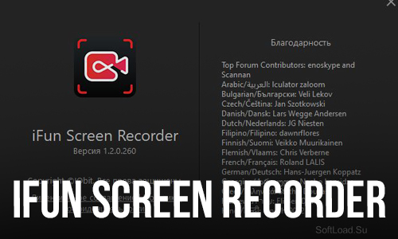

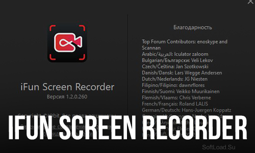
10.11.2021
iFun Screen Recorder – программа для записи видео с экрана, позволяющая
записывать видео с отдельных окон, полноэкранные видео или выбранные
участки экрана.

11.11.2021
Picasa - приложение от компании Google, которое позволяет просматривать и упорядочивать изображения на вашем компьютере. Это программное
обеспечение,с помощью которого Вы можете искать,редактировать,превращать фотографии в "фильм" или коллаж,создавать слайд-шоу и многое другое.
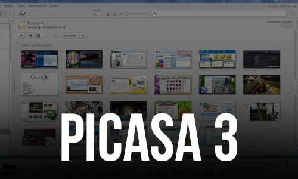
12.11.2021
Dism++ - программа для очистки операционной системы от собравшегося в
разных ее уголках мусора: временных файлов, логов, устаревших файлов, кэша
и т.п. Предлагает достаточно богатый функционал, который отлично
справляется со своим назначением.
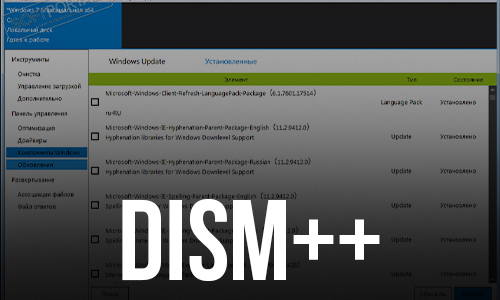
13.11.2021
Antispy for Windows 10 – портативная утилита для настройки параметров конфиденциальности и безопасности системы от Microsoft. Предотвращает
отправку Windows 10 диагностической информации и данных по
использованию.
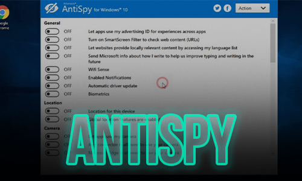
11.11.2021
SSDLife Free - простая в использовании утилита, которая предназначена для
мониторинга состояния и диагностики твердотельных (SSD) накопителей на
основании считываемых данных показателей S.M.A.R.T.
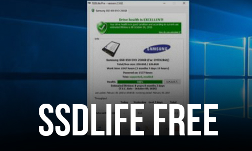
11.11.2021
AIMP — небольшой по размеру,бесплатный мультимедийный плеер,
оптимизирован для быстрого запуска и минимальной загрузки системы.
Программа создавалась по замечаниям пользователей других плееров, так что
в нем сосредоточилось все самое лучшее и даже больше.
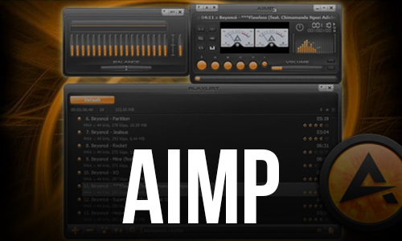
12.11.2021
Caramba Switcher - это принципиально новый, бесплатный автоматический переключатель раскладки клавиатуры.На одно ручное переключение раскладки
уходит около секунды, а на исправление неправильно набранного – несколько
секунд. Caramba Switcher исправляет текст моментально.
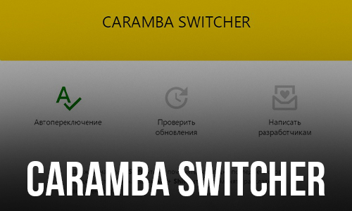
12.11.2021
HitmanPro - эффективная и шустрая утилита для поиска и удаления руткитов,
троянов, вирусов, червей, ботов, шпионских и рекламных программ, которая представляет собой антишпионский "облачный" сканер, использующий в работе
базы сигнатур Emsisoft, Ikarus, G Data и Dr.Web.
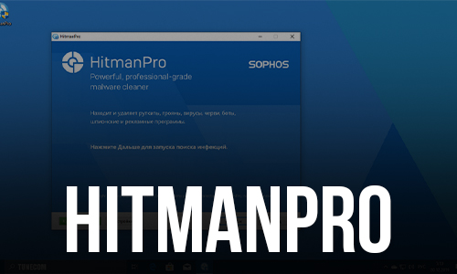
12.11.2021
PrimoCache - это программа, которая позволяет ускорить работу жесткого диска
за счет выделения определенного объема оперативной памяти под кэш
накопителей. Работает она как с SSD, так и с HDD-дисками, но существенный
прирост производительности ощущается только на последних.
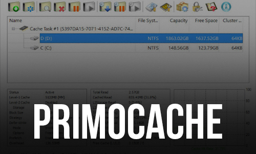
12.11.2021
Ueli - это средство запуска нажатий клавиш, которое означает, что оно помогает пользователю осуществлять поиск на своем компьютере - от файлов до
электронной почты, используя один или два ключа, за которыми следует
поисковый запрос.
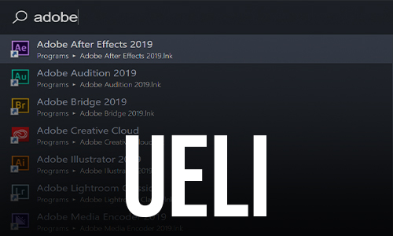
12.11.2021
Revo Uninstaller - позволяет удалять, деинсталлировать программы,
установленные на вашем компьютере. Умеет справляться с теми программами,
которые по каким-либо причинам не удалились в ходе использования
стандартного апплета системы - "Установка и удаление программ".
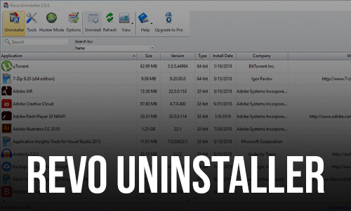
13.11.2021
Wise Force Deleter - утилита для удаления любого файла на Вашем компьютере,
даже того,который не получается удалить другими средствами и способами.
Интерфейс Wise Force Deleter прост,лаконичен и не содержит ничего лишнего.
Поэтому освоить работу с программой сможет даже начинающий пользователь.
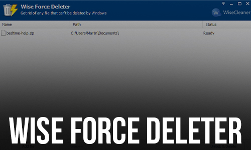